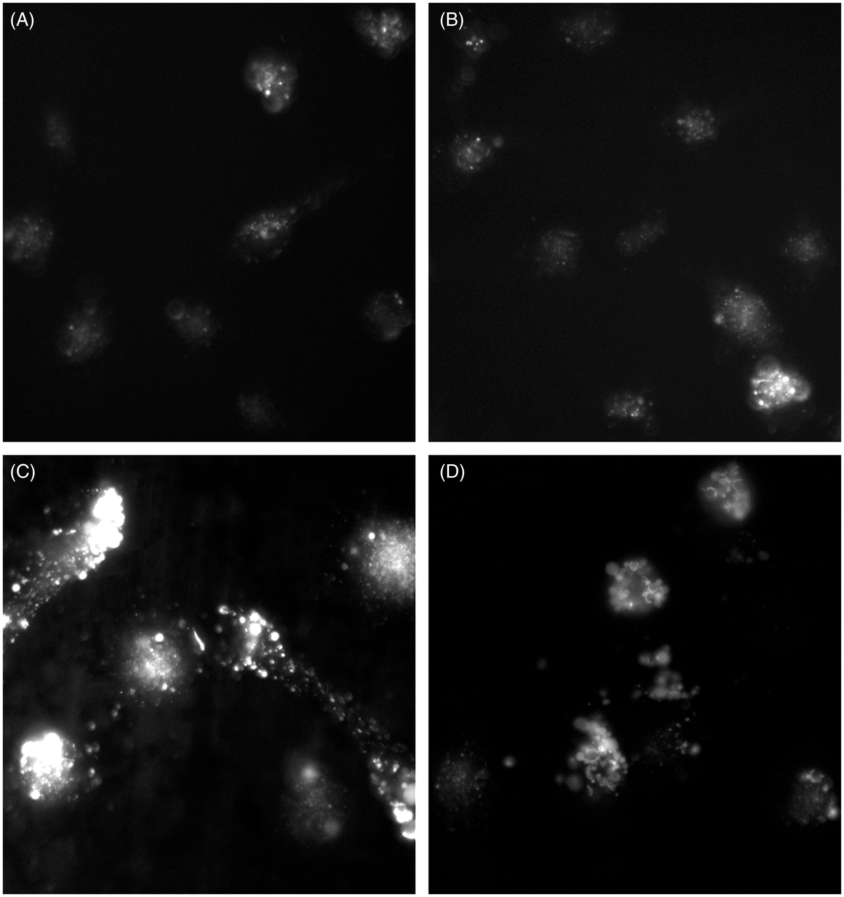

Protein delivery vectors can be grouped into two classes, those with specific membrane receptors undergoing conventional endocytosis and cell penetrating peptides (CPP) that have the capacity to cross cell or endosomal membranes. For both forms of vectors, translocation across a membrane is usually an inefficient process. In the current study, a novel vector combining the widely used CPP, Tat and the non-toxic neuronal binding domain of tetanus toxin (fragment C or TTC) was assessed for its capacity to deliver GFP as a test cargo protein to human neural progenitor cells (NPCs). These two functional membrane interacting domains dramatically enhanced internalization of the conjugated cargo protein.
Tat-TTC-GFP was found to be bound or internalized at least 83-fold more than Tat-GFP and 33-fold more than TTC-GFP in NPCs by direct fluorimetry, and showed enhanced internalization by quantitative microscopy of 18 - and 14-fold, respectively. This preferential internalization was observed to be specific to neuronal cell types. Photochemical internalization (PCI) was utilized to facilitate escape of the endosome-sequestered proteins. The combined use of the Tat-TTC delivery vector with PCI led to both enhancement of neural cell type specific delivery to an endosomal target, followed by the option of efficient release to the cytosol.
Gramlich, Paul A., Mary P. Remington, Julian Amin, Michael J. Betenbaugh, and Paul S. Fishman. " Tat-Tetanus Toxin Fragment C: A Novel Protein Delivery Vector and its use with Photochemical Internalization " Journal of Drug Targeting 21, no. 7 (2013): 662-674.
© 2014 Johns Hopkins University